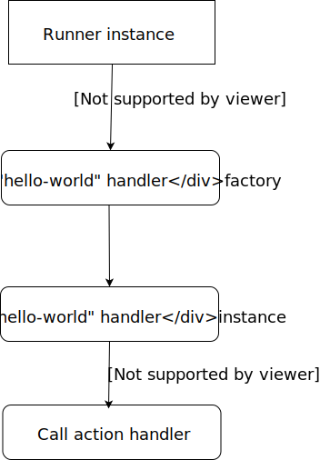

Intro
Plugins are generic Go libraries, compiled with plugin build mode.
Current target requires Go version 1.12 with enabled modules support.
Plugins are currently supported only on Linux and macOS.
Structure
Each plugin should export two methods:
func GetPluginName() string- returns plugin namefunc GetPluginActions() sdk.Actions- returns a map with action name as key and handler as value
Action lifecycle
Each time when job fires an action, Gilbert searches for handler factory that will return an action handler instance.
Gilbert calls action handler factory and passes a current job scope and action params from gilbert.yaml.

When factory returned action handler, Gilbert will call this action handler and pass job execution context and runner reference.
Example
Let’s create some simplest plugin with one action handler that prints a message from action parameters.
We will use a plugin example from GitHub and SDK library that provides all necessary types.
Exported functions
First, our plugin should have two declared functions to be loaded by Gilbert:
// GetPluginName returns plugin name
func GetPluginName() string {
return "example-plugin"
}
// GetPluginActions returns available action handlers
func GetPluginActions() sdk.Actions {
return sdk.Actions{
"hello-world": NewHelloAction,
}
}
Declaring a handler factory
Handler factory creates a new action handler instance. It receives a job scope and action parameters.
Scope used to retrieve variable values related to job and expand template expressions in action parameters.
type Params struct {
Message string
}
// NewHelloAction is action constructor
func NewHelloAction(scope sdk.ScopeAccessor, params sdk.ActionParams) (sdk.ActionHandler, error) {
p := Params{}
// extract params into our structure
if err := params.Unmarshal(&p); err != nil {
return nil, err
}
// return action handler instance
return &HelloAction{
scope: scope,
params: p,
}, nil
}
Action Handler
Action handler is a structure that satisfies sdk.ActionHandler interface.
It has 2 methods:
Call(sdk.JobContextAccessor, sdk.JobRunner) error- action handle method. accepts execution context and task runner reference.Cancel(sdk.JobContextAccessor) error- called when action execution must be aborted (e.g: job timeout reached or received a SIGKILL signal)
package main
import (
"github.com/go-gilbert/gilbert-sdk"
)
// HelloAction is an action handler
type HelloAction struct {
scope sdk.ScopeAccessor
params Params
}
func (p *HelloAction) Call(ctx sdk.JobContextAccessor, r sdk.JobRunner) (err error) {
// print message from action params and return no errors
ctx.Log().Info(p.params.Message)
return nil
}
func (p *HelloAction) Cancel(ctx sdk.JobContextAccessor) error {
ctx.Log().Info("Cancel callback call")
return nil
}
Plugin deployment
We recommend a GitHub as a default source of plugin distribution.
GitHub
- Build your library locally for all supported platforms (see: example)
- Create a new Release on your repo and attach artifacts.
Attention: your artifact should be in format repo-name_GOOS-GOARCH.so to be detectable by github:// plugin handler.
Example: my-plugin_linux-386.so or my-plugin_darwin-amd64.so.
Also, we recommend to attach gilbert-plugin topic to your repo to help people easier to find your plugin
Advanced examples
We recommend to look at several resources for more information: